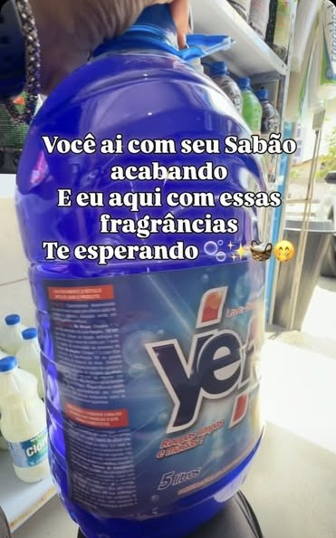
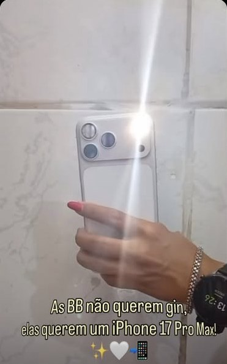
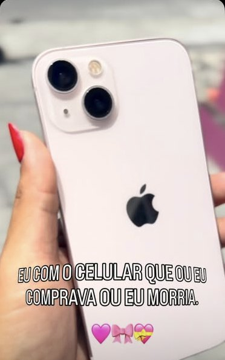

O que o perfil comunica hoje, o que já está trazendo resultado, o que está deixando cliente escapar e o plano para transformar seguidor em venda.
A PR Conecta tem o que falta para a maioria das lojas de bairro: gente real aparecendo, preço na tela e presença na comunidade. O que falta é o caminho até a compra: o perfil não tem link, nem botão de WhatsApp, e os destaques não respondem o que o cliente pergunta antes de comprar.
| Elemento | O que aparece | Leitura |
|---|---|---|
| Nome | "Pr Conecta Acessórios•Variedades•Limpeza" | BomAs palavras do nome entram na busca do Instagram. Quem procura "acessórios" na região pode achar a loja. |
| Bio | 🥇 Melhor preço da Zona Sul · 📍 Candeias (Esquina Rosa) · 🚚 Fazemos entregas | AjustarProposta clara, mas não diz o que vende nem o que fazer em seguida. Não há chamada para ação. |
| Link e contato | Nenhum link visível. Só os botões Seguir e Mensagem. | CríticoQuem se interessa só tem a DM. Sem WhatsApp, sem catálogo, sem rota. |
| Foto de perfil | Logo adaptado para o Novembro Azul, com texto pequeno | AjustarNo tamanho do círculo, o texto não dá para ler e o robô perde força. |
| Destaques | 🚐📦🚐 · Clientes ✨ · Gratidão · Evento 🧡🦈 · ZERA… | AjustarFalam da loja, não respondem preço, pagamento, iPhone ou como chegar. As capas são fotos sem padrão. |
| Fixados | Dono na loja · Vendedora com iPhone · "Localização" | BomOs três mostram rosto. Dá para trocar um deles pelo Reels de melhor resultado. |
| Rede local | Seguida por b.silva081, barbeariagribeiro e mais 35 que você segue | BomJá tem presença entre comércios e moradores da região. |
| Marcações | Patrocínio de evento, ação social, atleta de jiu-jitsu, academia, post da resma A4 | BomProva de envolvimento com o bairro, mas fica escondida na aba de marcações. |

▶ 520
▶ 631
▶ 8.751Leitura: o vídeo que viralizou não mostrava só o produto. Ele usou humor e identificação ("ou eu comprava ou eu morria") com um produto de desejo. Teve 14 vezes mais views que os vizinhos e chegou a quem ainda não segue a loja. O formato precisa virar série, não ficar num acerto isolado.
A bio precisa dizer o que vende, onde fica e o que fazer agora. O link pode levar para a landing page da loja ou direto para o WhatsApp. Ative também o botão Contato com o WhatsApp da loja.
Troque também a foto de perfil pelo robô sozinho, grande, no fundo azul-céu. A versão do Novembro Azul pode ir para os stories.
Todas as capas no mesmo padrão: ícone sobre o azul da marca. "Gratidão", "Evento" e "ZERA…" entram dentro de "Comunidade" e "Clientes".
| Seg | Ter | Qua | Qui | Sex | Sáb | Dom |
|---|---|---|---|---|---|---|
| Preço | Humor | Loja | Preço | Humor | Stories de entregas | Folga |
Manter um post com rosto. Trocar os outros pelo Reels de 8.751 views (prova de que o conteúdo funciona) e por um post "Como comprar": WhatsApp, entrega e endereço.
Views de quem não segue nos Reels e cliques no link e no WhatsApp. Esses dois mostram se o perfil traz cliente novo, não só curtida.